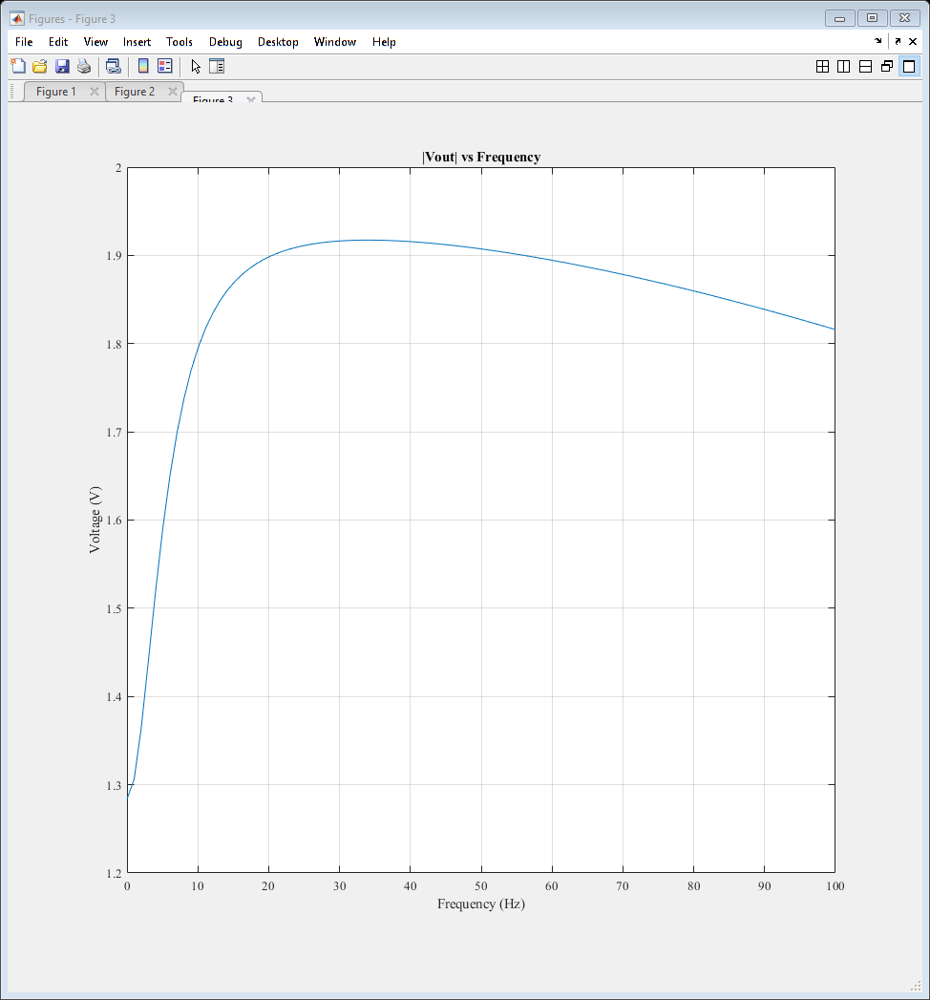

ELEC 4700 Assignment 4
Contents
- Circuit Modeling
- Section 1: Revisiting PA7 and Assignment 3
- Section 1.1: Finding the Resistance of R3
- Section 1.2: Calculating the resistance of R3
- Section 1.3: The C and G matricies
- Section 1.4: DC Sweep of Vin from -10V to 10V
- Section 1.5: The AC Case; Vout as a function of w
- Section 1.6: The AC Case; Plotting Vo/Vi in dB
Circuit Modeling
Keegan Mauger 101042551
Section 1: Revisiting PA7 and Assignment 3
In section 1, the MNA modeling done in PA7 and the monte-carlo/finite difference method code devoloped in assignment 3 are combined. First, assignment 3 is repurposed to find the resistance of R3 from PA7.
Section 1.1: Finding the Resistance of R3
The width of the bottleneck from assignment 3 was modified to find a resistance suggested by the TAs. First, teh assignment code was re-run to find a plot of the average current vs Vin.
clear all close all clc %set(0,'DefaultFigureWindowStyle','docked') set(0,'defaultaxesfontsize',10) set(0,'defaultaxesfontname','Times New Roman') set(0,'DefaultLineLineWidth', 0.5); %-------------------------------------------------------------------------- % Finite Difference Method Simulation %-------------------------------------------------------------------------- Zfac = 15e-9; Vin = linspace(0.1,10,30); Complete = linspace(0,100,30); for J=1:length(Vin) %fprintf('\n%3.2f percent complete',Complete(J)); % Fixed bottleneck of 0.2x10-7m % Solving V=V0 @ x=0 and V=0 @ x=L in region LxW % Implement funtion 'pbaspect' to fix Z aspect ratio clearvars -except Vin J Ix_total Iavg Zfac Complete Conc = 1e19; L = 200e-9; W = 100e-9; V0 = Vin(J); fMesh = 1; nx = fMesh*200; ny = fMesh*100; La = linspace(0,L,nx); Wa = linspace(0,W,ny); G = sparse(nx*ny); %V = sparse(nx,ny); F = sparse(1,nx*ny); Acond = 1; % background conductivity of region, low resistance Bcond = 1e-2; % Conductivity of boxes, highly resistive cMap = zeros(nx,ny); Lb = 40e-9; Wb = 40e-9; for u = 1:nx for v = 1:ny if (u >= 80 && u <= 120) if v >= 0 && v <= 40-1+J cMap(u,v) = Bcond; elseif v >= 60+1-J && v <= 100 cMap(u,v) = Bcond; else cMap(u,v) = Acond; end else cMap(u,v) = Acond; end end end for i = 1:nx %Iteration through length for j = 1:ny %Iteration through width n = j + (i-1)*ny; if i == 1 % x=0 BCs G(n,:) = 0; G(n,n) = 1; F(n) = V0; elseif i == nx % x=1 BCs G(n,:) = 0; G(n,n) = 1; F(n) = 0; %F(n)=0 sets z at final width to 0 % COMMENT BELOW FOR 1a %F(n) = 1; %F(n)=1 sets z at final width to 1 elseif j == 1 % y=0 BCs nxm = j + (i-2)*ny; nxp = j + (i)*ny; nyp = j+1 + (i-1)*ny; rxm = (cMap(i,j) + cMap(i-1,j))/2; rxp = (cMap(i,j) + cMap(i+1,j))/2; ryp = (cMap(i,j) + cMap(i,j+1))/2; G(n,n) = -(rxm+rxp+ryp); G(n,nxm) = rxm; G(n,nxp) = rxp; G(n,nyp) = ryp; elseif j == ny % y=1 BCs nxm = j + (i-2)*ny; nxp = j + (i)*ny; nym = j-1 + (i-1)*ny; rxm = (cMap(i,j) + cMap(i-1,j))/2; rxp = (cMap(i,j) + cMap(i+1,j))/2; rym = (cMap(i,j) + cMap(i,j-1))/2; G(n,n) = -(rxm+rxp+rym); G(n,nxm) = rxm; G(n,nxp) = rxp; G(n,nym) = rym; % COMMENT ABOVE FOR 1a else nxm = j + (i-2)*ny; nxp = j + (i)*ny; nym = j-1 + (i-1)*ny; nyp = j+1 + (i-1)*ny; rxm = (cMap(i,j) + cMap(i-1,j))/2; rxp = (cMap(i,j) + cMap(i+1,j))/2; rym = (cMap(i,j) + cMap(i,j-1))/2; ryp = (cMap(i,j) + cMap(i,j+1))/2; G(n,n) = -(rxm+rxp+rym+ryp); G(n,nxm) = rxm; G(n,nxp) = rxp; G(n,nym) = rym; G(n,nyp) = ryp; end end end % figure(1) % spy(G) V = G\F'; Vmap = zeros(nx,ny); for i = 1:nx for j = 1:ny n = j + (i-1)*ny; Vmap(i,j) = V(n); end end for i = 1:nx for j = 1:ny if i == 1 Ex(i, j) = (Vmap(i + 1, j) - Vmap(i, j)); elseif i == nx Ex(i, j) = (Vmap(i, j) - Vmap(i - 1, j)); else Ex(i, j) = (Vmap(i + 1, j) - Vmap(i - 1, j)) * 0.5; end if j == 1 Ey(i, j) = (Vmap(i, j + 1) - Vmap(i, j)); elseif j == ny Ey(i, j) = (Vmap(i, j) - Vmap(i, j - 1)); else Ey(i, j) = (Vmap(i, j + 1) - Vmap(i, j - 1)) * 0.5; end end end Ex = -Ex; Ey = -Ey; eFlowx = cMap .* Ex; %Jx eFlowy = cMap .* Ey; %Jy C0 = sum(eFlowx(1, :)); Cnx = sum(eFlowx(nx, :)); Curr = (C0 + Cnx) * 0.5; Ex = Ex'; Ey = Ey'; % figure(4) % subplot(1, 2, 2), quiver(Ex, Ey); % axis([0 nx 0 ny]); % title('Electric Field Map') % xlabel('Region Length') % ylabel('Region Width') % pbaspect([1 1 0.5]) % subplot(1, 2, 1), H = surf(La,Wa,Vmap'); % set(H, 'linestyle', 'none'); % %view(90, 270) % title('Voltage Map') % xlabel('Region Length') % ylabel('Region Width') % pbaspect([1 1 0.5]) % saveas(gcf,'Figure4') % clearvars -except Ex Ey %-------------------------------------------------------------------------- % Beginning Monte Carlo Simulation %-------------------------------------------------------------------------- set(0,'DefaultFigureWindowStyle','docked') set(0,'defaultaxesfontsize',10) set(0,'defaultaxesfontname','Times New Roman') set(0,'DefaultLineLineWidth', 0.5); global C C.q_0 = 1.60217653e-19; % electron charge C.hb = 1.054571596e-34; % Dirac constant C.h = C.hb * 2 * pi; % Planck constant C.m_0 = 9.10938215e-31; % electron mass C.kb = 1.3806504e-23; % Boltzmann constant C.eps_0 = 8.854187817e-12; % vacuum permittivity C.mu_0 = 1.2566370614e-6; % vacuum permeability C.c = 299792458; % speed of light C.g = 9.80665; % metres (32.1740 ft) per s² C.m_n = 0.26 * C.m_0; % effective electron mass C.am = 1.66053892e-27; % atomic mass unit C.T = 300; C.vth = sqrt(2*C.kb * C.T / C.m_n); temp = C.T; SPECDIFF_BOUND = 0; % figure(3) % subplot(2,1,1); % rectangle('Position',[0 0 200e-9 100e-9]) % hold on % rectangle('Position',[0.8e-7 0 0.4e-7 0.4e-7]) % hold on % rectangle('Position',[0.8e-7 0.6e-7 0.4e-7 0.4e-7]) % hold on %-------------------------------------------------------------------------- % Initializing Positions %-------------------------------------------------------------------------- N = 30000; % Number of electrons i = 0; j = 0; for i=1:N px(i) = 0 + (200e-9 - 0).*rand(1,1); py(i) = 0 + (100e-9 - 0).*rand(1,1); while (0.8e-7 <= px(i) && px(i) <= 1.2e-7) && (0 <= py(i) && py(i) <= (0.4e-7 - Zfac) ) ||... (0.8e-7 <= px(i) && px(i) <= 1.2e-7) && ((0.6e-7 + Zfac) <= py(i) && py(i) <= 1e-7) px(i) = 0 + (200e-9 - 0).*rand(1,1); py(i) = 0 + (100e-9 - 0).*rand(1,1); end end %-------------------------------------------------------------------------- % Voltage Applied Across x-Dimension to Find Electric Field %-------------------------------------------------------------------------- V0x = Vin(J); V0y = 0; L = 200e-9; W = 100e-9; % E0x = V0x / L; % E0y = V0y / W; fMesh = 1; nx = fMesh*200; ny = fMesh*100; % G = sparse(nx,ny); % F = sparse(1,nx*ny); La = linspace(0,L,nx); Wa = linspace(0,W,ny); deltax = L/nx; deltay = W/ny; Ex = Ex./deltax; Ey = Ey./deltay; % Emapx = zeros(ny,nx); Emapx = Ex; % Emapy = zeros(ny,nx); Emapy = Ey; % for i = 1:width(La) % for j = 1:width(Wa) % Emapx(j,i) = E0x; % Emapy(j,i) = E0y; % end % end % %surf(La,Wa,Emapx) % % Fex = abs(C.q_0*E0x); % aex = Fex/C.m_n; % Fey = abs(C.q_0*E0y); % aey = Fey/C.m_n; Fex = zeros(ny,nx); aex = zeros(ny,nx); Fey = zeros(ny,nx); aey = zeros(ny,nx); for i = 1:width(Wa) for j = 1:width(La) Fex(i,j) = abs(C.q_0*Emapx(i,j)); aex(i,j) = Fex(i,j)/C.m_n; Fey(i,j) = abs(C.q_0*Emapy(i,j)); aey(i,j) = Fey(i,j)/C.m_n; end end %-------------------------------------------------------------------------- % Thermal Velocity and Direction %-------------------------------------------------------------------------- vth = C.vth; for j=1:N vx(j) = (vth/sqrt(2))*randn(); vy(j) = (vth/sqrt(2))*randn(); vth_calc(j) = sqrt(vx(j)^2 + vy(j)^2); end t = 0; T(1) = 0; dt = 1e-14; % time step for l=1:N %Scattering time step ndt(l) = dt; end P_scat = 0; Tmn = 0.2e-12; px_prev = 0; py_prev = 0; T_prev = 0; vx_total = 0; vy_total = 0; sampleidx = randi(N,10,1); Ix = 0; Jx = 0; aex = aex'; aey = aey'; for t=2:1000 vx_total = 0; vy_total = 0; for k=1:N rpx = 0; rpy = 0; if px(k) == 200e-9 px(k) = 0; px_prev(k) = px(k); elseif px(k) == 0 px(k) = 200e-9; px_prev(k) = px(k); else px(k) = px(k); end P_scat(k) = 1 - exp(-(dt/Tmn)); if P_scat(k) > rand() vx(k) = (vth/sqrt(2))*randn(); vy(k) = (vth/sqrt(2))*randn(); else ndt(k) = ndt(k) + dt; end px_prev(k) = px(k); py_prev(k) = py(k); rpx = round(px(k)*1e9); if rpx == 0 rpx = 1; end rpy = round(py(k)*1e9); if rpy == 0 rpy = 1; end px(k) = px(k) + vx(k)*dt + aex(rpx,rpy)*dt^2; % Adding acceleration vx(k) = vx(k) + aex(rpx,rpy)*dt; py(k) = py(k) + vy(k)*dt + aey(rpx,rpy)*dt^2; vy(k) = vy(k) + aey(rpx,rpy)*dt; % Reflection on top and bottom borders if py(k) >= 100e-9 || py(k) <= 0 vy(k) = -vy(k); if py(k) >= 100e-9 py(k) = 100e-9; end if py(k) <= 0 py(k) = 0; end end % Reflection on bottom of upper box if (py(k) >= (0.6e-7 + Zfac)) && (0.8e-7 <= px(k) && px(k) <= 1.2e-7)... && ( 0.8e-7 <= px_prev(k) && px_prev(k) <= 1.2e-7) if SPECDIFF_BOUND == 1 vx(k) = (vth/sqrt(2))*randn(); vy(k) = (vth/sqrt(2))*randn(); else vy(k) = -vy(k); end py(k) = 0.601e-7 + Zfac; %end % Reflection on top of lower box elseif (py(k) <= 0.4e-7 - Zfac) && (0.8e-7 <= px(k) && px(k) <= 1.2e-7)... && (0.8e-7 <= px_prev(k) && px_prev(k) <= 1.2e-7) if SPECDIFF_BOUND == 1 vx(k) = (vth/sqrt(2))*randn(); vy(k) = (vth/sqrt(2))*randn(); else vy(k) = -vy(k); end py(k) = 0.399e-7 - Zfac; %end % Reflection on left of lower box elseif (0 <= py(k) && py(k) <= 0.4e-7 - Zfac) && (0.8e-7 <= px(k) && px(k) <= 1e-7) if SPECDIFF_BOUND == 1 vx(k) = (vth/sqrt(2))*randn(); vy(k) = (vth/sqrt(2))*randn(); else vx(k) = -vx(k); end px(k) = 0.799e-7; %end % Reflection on right of lower box elseif (0 <= py(k) && py(k) <= 0.4e-7 - Zfac) && (1e-7 <= px(k) && px(k) <= 1.2e-7) if SPECDIFF_BOUND == 1 vx(k) = (vth/sqrt(2))*randn(); vy(k) = (vth/sqrt(2))*randn(); else vx(k) = -vx(k); end px(k) = 1.201e-7; %end % Reflection on left of upper box elseif (0.6e-7 + Zfac <= py(k) && py(k) <= 1e-7) && (0.8e-7 <= px(k) && px(k) <= 1e-7) if SPECDIFF_BOUND == 1 vx(k) = (vth/sqrt(2))*randn(); vy(k) = (vth/sqrt(2))*randn(); else vx(k) = -vx(k); end px(k) = 0.799e-7; %end % Reflection on right of upper box elseif (0.6e-7 + Zfac <= py(k) && py(k) <= 1e-7) && (1e-7 <= px(k) && px(k) <= 1.2e-7) if SPECDIFF_BOUND == 1 vx(k) = (vth/sqrt(2))*randn(); vy(k) = (vth/sqrt(2))*randn(); else vx(k) = -vx(k); end px(k) = 1.201e-7; end % x-axis transition if px(k) > 200e-9 px(k) = 200e-9; % px_prev(k) = px(k); elseif px(k) < 0 px(k) = 0; % px_prev(k) = px(k); else px(k) = px(k); end v(k) = sqrt(vx(k)^2 + vy(k)^2); v2(k) = v(k).*v(k); vx_total = vx_total + vx(k); % Drift velocity x vy_total = vy_total + vy(k); % Drift velocity y end vx_total_alt = sum(vx); vx_drift = 1/N * vx_total; vy_drift = 1/N * vy_total; Jx = C.q_0 * Conc * vx_drift; %Concentration = 1e19 per m^-2 Ix_prev = Ix; Ix = Jx * W; Ix_total(t) = Ix; end Iavg(J) = mean(Ix_total); %bottleneck(J) = 20e-9 - (2*g) + 2e-9; end figure(1) plot(Vin,Iavg) xlabel('Input Voltage (V)') ylabel('Average Current (A)') title('Average Current VS Input Voltage') saveas(gcf,'Figure1')
Section 1.2: Calculating the resistance of R3
The solved resistance of R3 was then found to be approximately 51.32 ohms, found through a linear fit of the plot.
linFit = polyfit(Vin,Iavg,1); G3 = linFit(1); R3 = 1/G3; fprintf('\nThe resistance of R3 is %f ohms.',R3); clearvars -except R3
The resistance of R3 is 51.257629 ohms.
Section 1.3: The C and G matricies
Using code from PA7, the C and G matricies of the circuit were formed are are displayed below.
%-------------------------------------------------------------------------- % Reusing Modified Nodal Analysis Code for Circuit - DC Case %-------------------------------------------------------------------------- global G b C nodes = 6; G = sparse(nodes,nodes); C = sparse(nodes,nodes); b = sparse(nodes,1); % MNA setup Vin = 1; Vprobe = 0; R1 = 1; R2 = 2; %R3 = 10; %R3 found in part 1 R4 = 0.1; R5 = 1000; C1 = 0.25; L1 = 0.2; alpha = 100; cap(1,2,C1); res(1,2,R1); res(2,0,R2); res(3,6,R3); res(4,5,R4); res(5,0,R5); xr = vol(6,0,Vprobe); ind(2,3,L1); vol(1,0,Vin); vcvs(4,0,xr,0,alpha); w = 0; s = j*w; A = G + s*C; A0 = full(A); G0 = full(G); C0 = full(C); fprintf('\nThe G matrix is given as:\n'); disp(G0); fprintf('\nThe C matrix is given as:\n'); disp(C0);
The G matrix is given as:
Columns 1 through 7
1.0000 -1.0000 0 0 0 0 0
-1.0000 1.5000 0 0 0 0 0
0 0 0.0195 0 0 -0.0195 0
0 0 0 10.0000 -10.0000 0 0
0 0 0 -10.0000 10.0010 0 0
0 0 -0.0195 0 0 0.0195 1.0000
0 0 0 0 0 1.0000 0
0 1.0000 -1.0000 0 0 0 0
1.0000 0 0 0 0 0 0
0 0 0 1.0000 0 0 -100.0000
Columns 8 through 10
0 1.0000 0
1.0000 0 0
-1.0000 0 0
0 0 1.0000
0 0 0
0 0 0
0 0 0
0 0 0
0 0 0
0 0 0
The C matrix is given as:
Columns 1 through 7
0.2500 -0.2500 0 0 0 0 0
-0.2500 0.2500 0 0 0 0 0
0 0 0 0 0 0 0
0 0 0 0 0 0 0
0 0 0 0 0 0 0
0 0 0 0 0 0 0
0 0 0 0 0 0 0
0 0 0 0 0 0 0
0 0 0 0 0 0 0
0 0 0 0 0 0 0
Columns 8 through 10
0 0 0
0 0 0
0 0 0
0 0 0
0 0 0
0 0 0
0 0 0
-0.2000 0 0
0 0 0
0 0 0
Section 1.4: DC Sweep of Vin from -10V to 10V
Next, the value of Vin (at node 1) was swept from -10V to 10V and the resulting output at node 3 and the output were plotted.
V0 = linspace(-10,10,21); b0 = sparse((width(G)),width(V0)); for i = 1:width(V0) b0(9,i) = V0(i); end x = sparse((width(G)),width(V0)); for j = 1:width(V0) x(:,j) = (G + s*C) \ b0(:,j); end figure(2) plot(V0,x(5,:)) hold on plot(V0,x(3,:)) grid on axis([-10 10 -100 100]) title('Vout vs Vin') xlabel('Vin') ylabel('Vout') legend('Vout','V3') saveas(gcf,'Figure2') hold off
Section 1.5: The AC Case; Vout as a function of w
Vout was then plotted as a function of w (omega), where omega was swept from 0Hz to 100Hz over 100 points.
%-------------------------------------------------------------------------- % AC Case %-------------------------------------------------------------------------- clearvars -except R3 global G b C nodes = 6; G = sparse(nodes,nodes); C = sparse(nodes,nodes); b = sparse(nodes,1); % MNA setup Vin = 1; Vprobe = 0; R1 = 1; R2 = 2; %R3 = 10; R4 = 0.1; R5 = 1000; C1 = 0.25; L1 = 0.2; alpha = 100; cap(1,2,C1); res(1,2,R1); res(2,0,R2); res(3,6,R3); res(4,5,R4); res(5,0,R5); xr = vol(6,0,Vprobe); ind(2,3,L1); vol(1,0,Vin); vcvs(4,0,xr,0,alpha); w = linspace(0,100,100); s = j*w; % A = G + s.*C; % A0 = full(A); %V0 = linspace(-10,10,21); % b0 = sparse((width(G)),width(w)); % for i = 1:width(w) % b0(6,i) = V0(i); % end % x = (G + s*C) \ b; x = sparse((width(G)),width(w)); for i = 1:width(w) x(:,i) = (G + s(i)*C) \ b; end figure(3) plot(w,abs(x(5,:))) %hold on %plot(w,abs(x(3,:))) grid on title('|Vout| vs Frequency') xlabel('Frequency (Hz)') ylabel('Voltage (V)') %legend('Vout','V3') saveas(gcf,'Figure3') hold off
Section 1.6: The AC Case; Plotting Vo/Vi in dB
The gain of Vout over Vin was also plotted, in dB.
mag = abs(x(5,:)./x(1,:)); gain = mag2db(mag); figure(4) plot(w,gain) grid on title('Gain vs Frequency') ylabel('Gain (dB)') xlabel('Frequency') saveas(gcf,'Figure4')